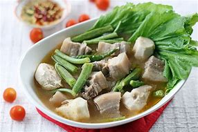

My Hobbies
Title description, May 16, 2023
I learned how to play guitar when I was 12 Years Old
My Favorite Food
Sinigang
Sinigang is a Filipino soup or stew characterized by its sour and savory taste. It is most often associated with tamarind, although it can use other sour fruits and leaves as the souring agent. It is one of the more popular dishes in Filipino cuisine. The soup is usually accompanied by rice. In 2021, sinigang was rated as the world's best vegetable soup by TasteAtlas.